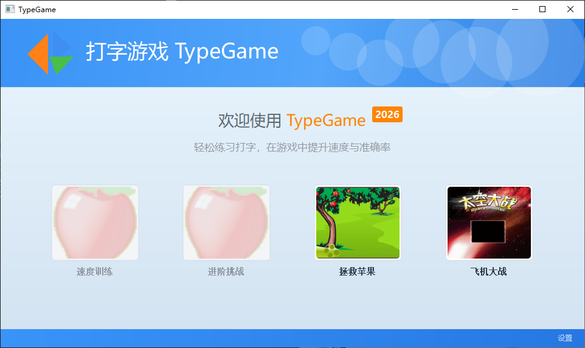
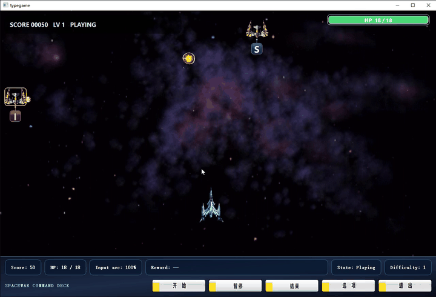
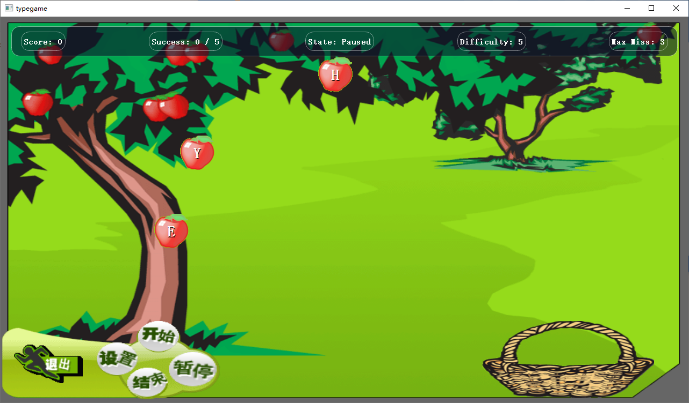
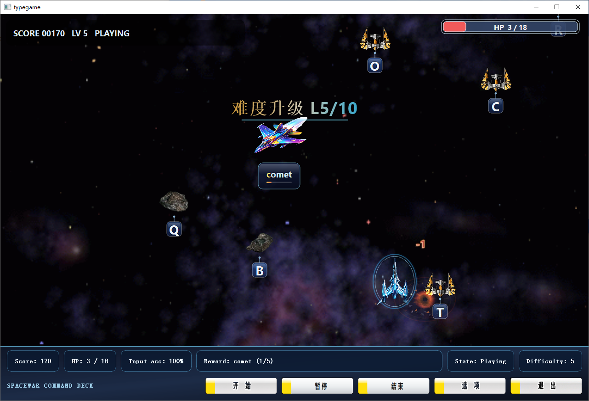

首页
提供游戏模式入口与基础操作流程。
Qt / C++ · MVC · AI Word Service
基于 Qt / C++ 开发，支持“拯救苹果”和“太空大战”两种游戏模式。 项目封装了通用打字游戏框架，并结合对象池、观察者模式、异步服务和 AI 奖励词生成模块。
Demo


提供游戏模式入口与基础操作流程。

通过输入单词完成下落目标的识别与得分。

包含敌机移动、子弹追踪、碰撞检测、难度升级等实时交互逻辑。
Features
支持“拯救苹果”和“太空大战”两种玩法，并复用通用输入检测、计分和状态管理逻辑。
拆分 Model / View / Controller，降低 UI、业务状态和流程控制之间的耦合。
使用观察者模式处理游戏事件通知，使用对象池减少游戏实体频繁创建和销毁开销。
接入大模型 API 生成奖励词，并设计本地词库降级机制，提升功能稳定性。
日志、音频、埋点等能力采用异步方式处理，减少对主游戏循环和 UI 响应的影响。
提供命令行测试入口与 Google Test 单元测试，便于验证核心逻辑。
Architecture
负责界面绘制、动画展示和用户交互。
负责输入处理、游戏流程控制和信号转发。
负责游戏状态、实体管理、计分和规则判断。
负责日志、音频、AI 单词生成和数据埋点等通用能力。
Tech Stack
如果想了解具体目录结构、构建方式和模块实现，可以查看 GitHub 仓库中的 README 与项目详细说明文档。
前往 GitHub